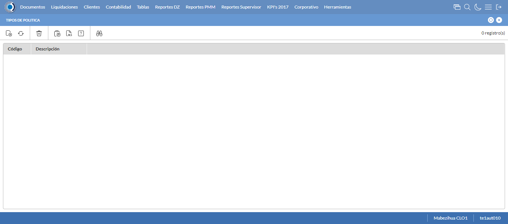
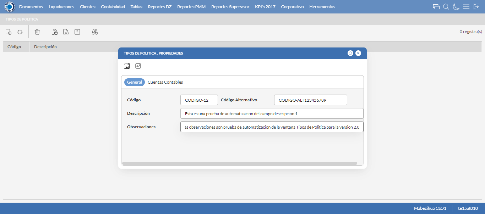
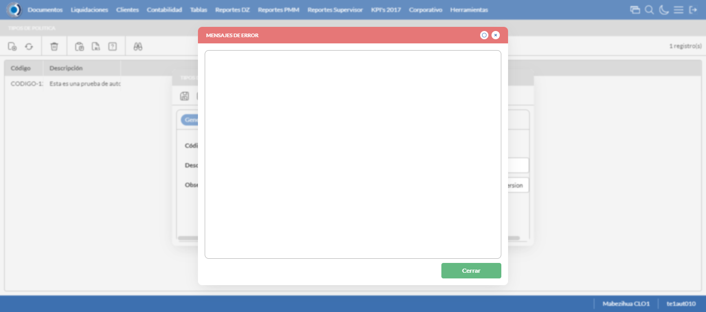
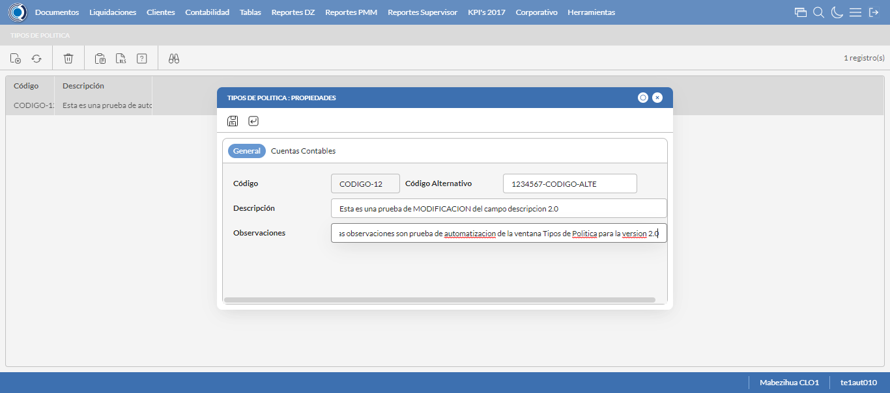
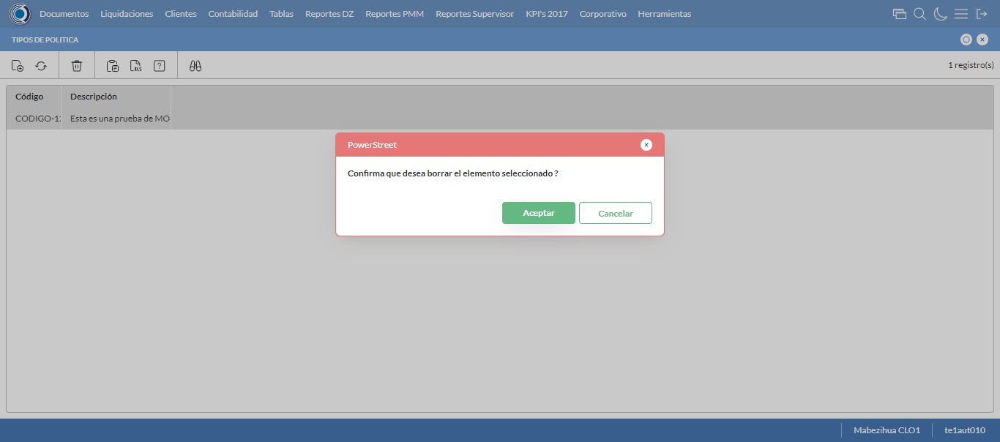

Desarrollado por : Area de Testing PWST
Fecha y hora de inicio : 2023-04-21 15:39:20
Duracion : 0:02:23.944128
Resultado : Total 8，Correctos 7 ，Errores 1 ，Taza de resultado 87.50%
Resumen 87.50% Errores 1 Fallidos 0 Correctos 7 Test realizados 8
| Caso de Prueba | Total | Correctos | Fallido | Error | Detalles | Captura del error |
| TiposPolitica.Test: Escenario 1 de Tipos De Politica | 8 | 7 | 0 | 1 | Detalles | |
test |
ft1_1: 2023-04-21 15:39:22,228 - root - INFO - Se abre el chrome
2023-04-21 15:39:23,392 - root - INFO - Entra a la URL
2023-04-21 15:39:23,523 - root - INFO - Maximiza la pantalla
Traceback (most recent call last):
File "C:\Users\gerar\AppData\Local\Programs\Python\Python311\Lib\site-packages\selenium\webdriver\remote\switch_to.py", line 88, in frame
frame_reference = self._driver.find_element(By.ID, frame_reference)
^^^^^^^^^^^^^^^^^^^^^^^^^^^^^^^^^^^^^^^^^^^^^^^^^
File "C:\Users\gerar\AppData\Local\Programs\Python\Python311\Lib\site-packages\selenium\webdriver\remote\webdriver.py", line 861, in find_element
return self.execute(Command.FIND_ELEMENT, {"using": by, "value": value})["value"]
^^^^^^^^^^^^^^^^^^^^^^^^^^^^^^^^^^^^^^^^^^^^^^^^^^^^^^^^^^^^^^^^^
File "C:\Users\gerar\AppData\Local\Programs\Python\Python311\Lib\site-packages\selenium\webdriver\remote\webdriver.py", line 444, in execute
self.error_handler.check_response(response)
File "C:\Users\gerar\AppData\Local\Programs\Python\Python311\Lib\site-packages\selenium\webdriver\remote\errorhandler.py", line 249, in check_response
raise exception_class(message, screen, stacktrace)
selenium.common.exceptions.NoSuchElementException: Message: no such element: Unable to locate element: {"method":"css selector","selector":"[id="mainFrame"]"}
(Session info: chrome=112.0.5615.138)
Stacktrace:
Backtrace:
GetHandleVerifier [0x00BADCE3+50899]
(No symbol) [0x00B3E111]
(No symbol) [0x00A45588]
(No symbol) [0x00A708F9]
(No symbol) [0x00A70AFB]
(No symbol) [0x00A9F902]
(No symbol) [0x00A8B944]
(No symbol) [0x00A9E01C]
(No symbol) [0x00A8B6F6]
(No symbol) [0x00A67708]
(No symbol) [0x00A6886D]
GetHandleVerifier [0x00E13EAE+2566302]
GetHandleVerifier [0x00E492B1+2784417]
GetHandleVerifier [0x00E4327C+2759788]
GetHandleVerifier [0x00C45740+672048]
(No symbol) [0x00B48872]
(No symbol) [0x00B441C8]
(No symbol) [0x00B442AB]
(No symbol) [0x00B371B7]
BaseThreadInitThunk [0x76047D49+25]
RtlInitializeExceptionChain [0x772CB74B+107]
RtlClearBits [0x772CB6CF+191]
During handling of the above exception, another exception occurred:
Traceback (most recent call last):
File "C:\Users\gerar\AppData\Local\Programs\Python\Python311\Lib\site-packages\selenium\webdriver\remote\switch_to.py", line 91, in frame
frame_reference = self._driver.find_element(By.NAME, frame_reference)
^^^^^^^^^^^^^^^^^^^^^^^^^^^^^^^^^^^^^^^^^^^^^^^^^^^
File "C:\Users\gerar\AppData\Local\Programs\Python\Python311\Lib\site-packages\selenium\webdriver\remote\webdriver.py", line 861, in find_element
return self.execute(Command.FIND_ELEMENT, {"using": by, "value": value})["value"]
^^^^^^^^^^^^^^^^^^^^^^^^^^^^^^^^^^^^^^^^^^^^^^^^^^^^^^^^^^^^^^^^^
File "C:\Users\gerar\AppData\Local\Programs\Python\Python311\Lib\site-packages\selenium\webdriver\remote\webdriver.py", line 444, in execute
self.error_handler.check_response(response)
File "C:\Users\gerar\AppData\Local\Programs\Python\Python311\Lib\site-packages\selenium\webdriver\remote\errorhandler.py", line 249, in check_response
raise exception_class(message, screen, stacktrace)
selenium.common.exceptions.NoSuchElementException: Message: no such element: Unable to locate element: {"method":"css selector","selector":"[name="mainFrame"]"}
(Session info: chrome=112.0.5615.138)
Stacktrace:
Backtrace:
GetHandleVerifier [0x00BADCE3+50899]
(No symbol) [0x00B3E111]
(No symbol) [0x00A45588]
(No symbol) [0x00A708F9]
(No symbol) [0x00A70AFB]
(No symbol) [0x00A9F902]
(No symbol) [0x00A8B944]
(No symbol) [0x00A9E01C]
(No symbol) [0x00A8B6F6]
(No symbol) [0x00A67708]
(No symbol) [0x00A6886D]
GetHandleVerifier [0x00E13EAE+2566302]
GetHandleVerifier [0x00E492B1+2784417]
GetHandleVerifier [0x00E4327C+2759788]
GetHandleVerifier [0x00C45740+672048]
(No symbol) [0x00B48872]
(No symbol) [0x00B441C8]
(No symbol) [0x00B442AB]
(No symbol) [0x00B371B7]
BaseThreadInitThunk [0x76047D49+25]
RtlInitializeExceptionChain [0x772CB74B+107]
RtlClearBits [0x772CB6CF+191]
During handling of the above exception, another exception occurred:
Traceback (most recent call last):
File "C:\xampp\htdocs\versiones\automatizaciones\AutoPWST\01TP\testCase\TiposPolitica.py", line 36, in test
self.driver.switch_to.frame("mainFrame")
File "C:\Users\gerar\AppData\Local\Programs\Python\Python311\Lib\site-packages\selenium\webdriver\remote\switch_to.py", line 93, in frame
raise NoSuchFrameException(frame_reference)
selenium.common.exceptions.NoSuchFrameException: Message: mainFrame
|
|
||||
test_000: Ingresa a la base de datos |
pt1_2: 2023-04-21 15:39:26,650 - root - INFO - Escribe el usuario
2023-04-21 15:39:26,746 - root - INFO - Escribe la contraseña
2023-04-21 15:39:26,839 - root - INFO - Se dio clic en el boton ingresar
2023-04-21 15:39:28,605 - root - INFO - Ejecutar Enterprise
2023-04-21 15:39:32,646 - root - INFO - Cambia entre pestañas
|
|
||||
test_001: Abre menu y ejecuta pantalla |
pt1_3: 2023-04-21 15:40:46,095 - root - INFO - Se ingreso a la pantalla mediante el buscador porque fallo el ingreso por menus
2023-04-21 15:40:46,107 - root - INFO - La función buscador funciona de manera correcta.
2023-04-21 15:40:46,661 - root - INFO - La pantalla ejecutada es Tipos de Politica
2023-04-21 15:40:49,663 - root - INFO - Captura: C:\xampp\htdocs\versiones\automatizaciones\AutoPWST\01TP\report\img screen：20230421_15_40_49.png
2023-04-21 15:41:00,104 - root - INFO - Se presiona el boton 'Nuevo', para crear un nuevo registro.
|
 | ||||
test_002: Abre la ventana de nuevo y crear un registro |
pt1_4: 2023-04-21 15:41:00,679 - root - INFO - Se abrio la pantalla para el ingreso de un registro nuevo.
2023-04-21 15:41:00,726 - root - INFO - El campo 'Codigo' si se encuentra visible.
2023-04-21 15:41:00,766 - root - INFO - El campo 'Codigo Alternativo' si se encuentra visible.
2023-04-21 15:41:00,796 - root - INFO - El campo 'Descrición' si se encuentra visible.
2023-04-21 15:41:00,839 - root - INFO - El campo 'Observaciones' si se encuentra visible.
2023-04-21 15:41:00,913 - root - INFO - Ingresa el codigo del nuevo registro
2023-04-21 15:41:01,017 - root - INFO - Ingresa el codigo alternativo del nuevo registro
2023-04-21 15:41:01,176 - root - INFO - Ingresa la descripción del nuevo registro
2023-04-21 15:41:01,375 - root - INFO - Ingresa la Observación del nuevo registro
2023-04-21 15:41:02,383 - root - INFO - Captura: C:\xampp\htdocs\versiones\automatizaciones\AutoPWST\01TP\report\img screen：20230421_15_41_02.png
2023-04-21 15:41:02,576 - root - INFO - Se hace el cambio a la pestaña Cuentas Contables para continuar con el registro nuevo
2023-04-21 15:41:03,164 - root - INFO - Se presiona el boton 'Nuevo', para crear un nuevo registro de Cuentas Contables.
2023-04-21 15:41:03,202 - root - INFO - El campo 'Tipo Documento' si se encuentra visible.
2023-04-21 15:41:03,248 - root - INFO - El campo 'Cuenta Contable' si se encuentra visible.
2023-04-21 15:41:03,300 - root - INFO - El campo 'Centro Costo' si se encuentra visible.
2023-04-21 15:41:04,242 - root - INFO - Se dió doble click en el regitro de Tipo Documento.
2023-04-21 15:41:05,274 - root - INFO - Se dió doble click en el regitro de Cuentas Contables.
2023-04-21 15:41:06,401 - root - INFO - Se dió doble click en el regitro de Centro Costo.
2023-04-21 15:41:06,670 - root - INFO - Se presiona el boton 'Aceptar', para guardar el registro de cuentas contables.
2023-04-21 15:41:06,985 - root - INFO - Se da clic en el boton Guardar; se debe crear un nuevo registro.
|
 | ||||
test_003: Repetir el registro creado anteriormente |
pt1_5: 2023-04-21 15:41:07,193 - root - INFO - Se presiona el boton 'Refrescar', para crear un nuevo registro igual al anterior.
2023-04-21 15:41:07,363 - root - INFO - Se presiona el boton 'Nuevo', para crear un nuevo registro igual al anterior.
2023-04-21 15:41:07,910 - root - INFO - Se abrio la pantalla para el ingreso de un registro nuevo.
2023-04-21 15:41:07,941 - root - INFO - El campo 'Codigo' si se encuentra visible.
2023-04-21 15:41:07,973 - root - INFO - El campo 'Codigo Alternativo' si se encuentra visible.
2023-04-21 15:41:08,006 - root - INFO - El campo 'Descrición' si se encuentra visible.
2023-04-21 15:41:08,039 - root - INFO - El campo 'Observaciones' si se encuentra visible.
2023-04-21 15:41:08,108 - root - INFO - Ingresa el codigo del nuevo registro
2023-04-21 15:41:08,230 - root - INFO - Ingresa el codigo alternativo del nuevo registro
2023-04-21 15:41:08,377 - root - INFO - Ingresa la descripción del nuevo registro
2023-04-21 15:41:08,590 - root - INFO - Ingresa la Observación del nuevo registro
2023-04-21 15:41:08,655 - root - INFO - Se da clic en el boton Guardar; No se debe crear un nuevo registro.
2023-04-21 15:41:09,658 - root - INFO - Captura: C:\xampp\htdocs\versiones\automatizaciones\AutoPWST\01TP\report\img screen：20230421_15_41_09.png
2023-04-21 15:41:15,051 - root - INFO - Se presiona el boton 'Cerrar', para cerrar el mensaje de duplicidad de llave primaria
2023-04-21 15:41:16,053 - root - INFO - Captura: C:\xampp\htdocs\versiones\automatizaciones\AutoPWST\01TP\report\img screen：20230421_15_41_16.png
2023-04-21 15:41:16,294 - root - INFO - Se presiona el boton 'Cerrar', para cerrar el mensaje de duplicidad de llave primaria
2023-04-21 15:41:16,570 - root - INFO - Se presiona el boton 'Cerrar', para cerrar la ventana
|
 | ||||
test_004: Modificar el registro |
pt1_6: 2023-04-21 15:41:16,870 - root - INFO - Se presiona el boton 'Refrescar', para proceder a modificar el registro.
2023-04-21 15:41:18,496 - root - INFO - Se da doble click en el registro creado, para proceder a modificarlo.
2023-04-21 15:41:19,674 - root - INFO - Se modifica el contenido del campo Codigo Alternativo
2023-04-21 15:41:19,857 - root - INFO - Se modifica el contenido del campo Descripcion
2023-04-21 15:41:19,978 - root - INFO - Se modifica el contenido del campo Observaciones
2023-04-21 15:41:20,979 - root - INFO - Captura: C:\xampp\htdocs\versiones\automatizaciones\AutoPWST\01TP\report\img screen：20230421_15_41_20.png
2023-04-21 15:41:21,143 - root - INFO - Se hace el cambio a la pestaña Cuentas COntables para continuar con la Modificación del registro
2023-04-21 15:41:22,225 - root - INFO - Se da clic en el registro de cuentas contables creado, para proceder a modificarlo.
2023-04-21 15:41:23,947 - root - INFO - Se dió doble click en el regitro de Tipo Documento.
2023-04-21 15:41:25,017 - root - INFO - Se dió doble click en el regitro de Cuentas Contables.
2023-04-21 15:41:26,134 - root - INFO - Se dió doble click en el regitro de Centro Costo.
2023-04-21 15:41:26,396 - root - INFO - Se presiona el boton 'Aceptar', para guardar la modiiación del registro de Cuentas Contables.
2023-04-21 15:41:26,673 - root - INFO - Se da clic en el boton Guardar; se debe modificar la informacion del registro.
|
 | ||||
test_005: Eliminar el registro creado |
pt1_7: 2023-04-21 15:41:26,928 - root - INFO - Se presiona el boton 'Refrescar', para proceder a eliminar el registro.
2023-04-21 15:41:33,532 - root - INFO - Se da clic en el registro creado, para proceder a eliminarlo.
2023-04-21 15:41:33,605 - root - INFO - Se presiona el boton 'Eliminar', para eliminar el registro.
2023-04-21 15:41:35,606 - root - INFO - Captura: C:\xampp\htdocs\versiones\automatizaciones\AutoPWST\01TP\report\img screen：20230421_15_41_35.png
2023-04-21 15:41:35,776 - root - INFO - Se confirma el eliminado del registro
2023-04-21 15:41:35,951 - root - INFO - Se presiona el boton 'Refrescar', para verificar si el registro se elimino.
2023-04-21 15:41:38,036 - root - INFO - Se presiona el boton 'Cerrar', para cerrar la pantalla de Tipo Politicas.
|
 | ||||
test_006: Cerrar_Navegador |
pt1_8: 2023-04-21 15:41:44,485 - root - INFO - Se cierra chrome
|
|
||||
| Caso de prueba | 8 | 7 | 0 | 1 | Taza de resultado：87.50% | |